CS184/284A Summer 2025 Homework 3 Write-Up
Names: Ryan Trac and Nandini Velinedi
Link to webpage:
cs184.eecs.berkeley.edu/sp25
Link to GitHub repository:
cs184.eecs.berkeley.edu/sp25
Overview
Give a high-level overview of what you implemented in this homework. Think about what you've built as a whole. Share your thoughts on what interesting things you've learned from completing the homework.
In this homework, we built a full Monte Carlo path tracer from the ground up, going through five main parts to achieve realistic global illumination.
In Part 1, we started with ray generation and scene intersection, setting up the basic pipeline to shoot rays and check for hits.
Then in Part 2, we added a Bounding Volume Hierarchy (BVH), which made things way faster by narrowing down the number of intersection
tests using spatial subdivisions instead of checking eery single shape in the scene. Part 3 focused on direct lighting using both hemisphere
and importance sampling to better estimate how light hits surfaces. In Part 4, we extended this to full global illumination with recursive bounces,
which let us simulate effects like soft shadows, color bleeding, and indirect lighting. Finally, Part 5 introduced adaptive sampling, which made
rendering more efficient by putting more effort into pixels that hadn’t converged yet.
Building this path tracer helped us understand how light actually behaves and how we can simulate that code.
It was especially interesting to see how recursive ray tracing naturally models real light transport.
Each bounce adds more information and importance sampling and Russian Roulette after image quality and efficiency.
The BVH implementation was a game changer. Without it, every ray would have to check again model with over 130000 triangles,
we only needed about 6 to 7 intersection checks per ray, and rendering speeds stayed between 3.8 and 5.4 million rays per second.
It was cool to see how algorithms choices like using BVH can make rendering practical even for really detailed scenes.
Part 1: Ray Generation and Scene Intersection
Walk through the ray generation and primitive intersection parts of the rendering pipeline.
To implement ray generation we first had to translate the normalized image coordinates into Camera space. To do this, we first translated every point
by (-.5,-.5) as the midpoint of the image space (0.5,0,5) corresponded to (0,0,-1) in camera space. We then realized the bottom left and top right corners
were scaled by (tan(hfov/2),tan(vfov/2)) so we also scaled the given (x,y) coordinate by this scalar as well. Another important thing to note is that to get
(0,0) and (1,1) to map to (-tan(hfov/2),-tan(vfov/2), -1) and (tan(hfov/2),tan(vfov/2), -1) after translating by -0.5, we would have to multiply by 2 since
after translating the normalizlied points by -0.5 we would have (-0.5, -0.5) and (0.5,0.5) so to map the points correctly we need to scale them back up
to (-1,-1) and (1,1) in order to get the correct mapping. From there we just normalize the direction vector and we get our ray! As for the primitives,
the intersection functions are called from the primitives (triangles or spheres) themselves so once we find out that the ray intersects the primitive,
we can simply set the primitive attribute of the intersect struct to be "this".
Explain the triangle intersection algorithm you implemented in your own words.
To implement our triangle intersection algorithm, we made use of the Möller Trumbore Algorithm which uses barycentric coordinates
in order to figure out if our ray intersects a triangle. The algorithm is also useful as it will tell us at what t value the ray
intersects the triangle if it even does. Similarly to HW1, we can see if the barycentric weights are all equal or above 1 to figure
out if the ray intersects the triangle. And of course we also need to make sure our t value is within max_t and and min_t to see if
the intersection is even visible to the camera. Finally if we get a valid intersection, we update max_t to make sure later and further
intersections are ignored, compute the intersection normal by interpolating the vertex normals with barycentric weights, and updating
all the other isect struct members.
Show images with normal shading for a few small .dae files.
|
Image of CBspheres lambertian
|
 Image of CBgems
Image of CBgems
|
Part 2: Bounding Volume Hierarchy
Walk through your BVH construction algorithm. Explain the heuristic you chose for picking the splitting point.
Our BVH construction algorithm builds a binary tree structure recursively using a top-down approach that subdivides primitives based on spatial coherence
to accelerate ray-primitive intersection tests. The algorithm begins by computing a bounding box that encompasses all primitives in the current node,
then determines whether to create a leaf node or continue subdivision based on whether the number of primitives exceeds the maximum leaf size threshold.
For internal nodes, we employ a centroid-based splitting heuristic that selects the splitting axis by identifying the dimension with the largest extent in
the bounding box, ensuring we split along the direction with the greatest spatial spread. The splitting point is calculated as the average of all
primitive centroids along the chosen axis, providing a balanced partition that tends to create roughly equal-sized subtrees while maintaining spatial locality.
We use the standard library's partition function to efficiently rearrange primitives based on whether their centroid falls below or above the splitting point,
creating two disjoint sets for the left and right child nodes. To handle degenerate cases where all primitives have the same centroid or the partition results
in empty subtrees, we implement a fallback mechanism that splits the primitive list at the midpoint, ensuring the algorithm always makes progress and terminates.
The recursive construction continues until all leaf nodes contain fewer primitives than the maximum leaf size, creating a balanced tree structure that enables
efficient ray traversal by allowing early termination when rays miss bounding boxes and providing logarithmic search complexity for intersection queries.
Images that can only be rendered with BVH acceleration.
Comparison of rendering times on complex geometries with and without BVH acceleration.
We tested three scenes with different amounts of geometry: the cow (5856 triangles), Max Planck (50801), and Lucy (133784). With BVH acceleration, rendering stayed fast
even for the more complex models because each ray only had to check about 6 to 7 shapes on average. Without BVH, each ray would have to check every single triangle,
which would be way slower. Building the BVH took almost no time (a few milliseconds) and rendering speeds stayed high (around 3.8 to 5.4 million rays per second).
This shows that BVH makes a huge difference in keeping things fast, especially for detailed scenes.
Part 3: Direct Illumination
Our implementation of Uniform direct lighting
To implement the uniform direct lighting, we sample the hemisphere uniformly to get the incoming light vector direction. I will be reffering to
this vector as the sample_vector. We then send a ray from our original hit point (hit_p) and setting its direction to be o2w * sample_vector. We also update its min_t to be EPS_F so
intersections at the origin aren't considered. We convert the sample_vector to world space as we want
the vector to be in object space but rather in world space to see if the ray intersects a light source. From here, we see if this ray intersects the bvh if it does,
we compute how much this sample contributes to the Monte Carlo estimator. We calcualte the bsdf on the w_out and w_in vectors which are
both in object space, the pdf is given by the standard uniform hemisphere pdf which is 1.0 / 2 * PI, and we compute the cos angle by computing the dot
product of the normal and sample_vector. We then repeat this process num_sample times and then normalize the final sum by the number of samples we took
to get the final estimation of light.
Rendered images with Uniform direct lighting
|
Image of CBbunny with Uniform direct lighting
|
 Image of CBunny with Uniform direct lighting but less rays casted
Image of CBunny with Uniform direct lighting but less rays casted
|
Our implementation of Importance direct lighting
The implementation of importance direct lighting is similar to the uniform direct lighting with a few
key differences. For one, we let sample_f function do most of the work as it will give us a sample_vector,
the distance to light which helps us upper bound the ray we send and also gives us the distribution of the
sampled vector as it is no longer just uniform over a hemisphere. Another key thing is that we have to sample
ns_area_light times per light vector in the scene unless its a point light in which we just sample it once as
per the spec's suggestion. The final key difference is that instead of checking for intersections, we check if
the ray doesn't have an intersection and we add this to our estimator as the light directly hits the target hit
point.
Rendered images with Importance direct lighting
 Image of CBbunny with Importance direct lighting
Image of CBbunny with Importance direct lighting
|
 Image of a Dragon with Importance direct lighting
Image of a Dragon with Importance direct lighting
|
Rendering of CBbunny with 1, 4, 16, and 64 light rays and 1 sample per pixel
 1 Light ray
1 Light ray
|
 4 Light rays
4 Light rays
|
 16 Light rays
16 Light rays
|
64 Light rays
|
Noise and Shadow Comparison
Above, we can see clear difference in the amount of noise in the shadows which increases
when less light rays are sent. When 1 light ray is sent, we are majorly undersampling the area
of light as one light ray cannot capture the true lighting of the area. Thus we get a lot of noise
especially in the shadow of the rabbit breast as most of the rays not being accounted for as they are intersecting
an object and thus not being added to the light estimate. We also see a very noticable amount of noise
in the rabbit ears which is also caused by undersampling. Then as we increase to 4 light rays, the amount of noise
in the ear and breast shadow starts to decrease yet they are still noticable. Upping it to 16, we now see
that the noise on the rabbit body is essentialy gone and the shadows become even less noisy. Finally when we
send 64 light rays, we have the best outcome of soft shadows with essentially no noise.
Comparison of results between uniform hemisphere sampling and lighting sampling
The visual differences between the two are quite apparent with lighting sampling being the clear winner.
The uniform hemisphere sampling produces a much more grainy and noisy image. This is most apparent on all the
walls which look very rough and grainy. On the other hand, lighting sampling produces very smooth walls which
in turn make the shadows softer as they aren't being mixed with the grainy walls and floors. And in terms of runtime,
lighting sampling has uniform sampling beat as on our code lighting runs about 20 seconds faster. This is due to the
optimizations we added which included skipping lights that the ray is behind and only sampling point lights one time.
Part 4: Global Illumination
Walk through your implementation of the indirect lighting function.
Our indirect lighting implementation is built around the at_least_one_bounce_radiance function, which computes global illumination
through recursive Monte Carlo path tracing. The function begins by establishing a local coordinate system at each surface intersection
point with the normal aligned to the Z-axis, then computes direct lighting contributions using either hemisphere sampling or
importance sampling from light sources. For indirect lighting, we sample the material's BSDF to determine the next ray direction,
accounting for the surface's reflectance properties and providing importance sampling based on material characteristics. To prevent
infinite recursion while maintaining mathematical correctness, we implement Russian Roulette termination with a 35% probability of
stopping at each bounce. The recursive structure traces rays through the scene, accumulating light contributions from each surface
interaction, where each contribution is properly weighted by the BSDF value, the cosine of the angle between the surface normal and
incident direction, and the inverse of the sampling probability density function. This approach naturally handles complex light
transport phenomena including color bleeding, soft shadows, and ambient occlusion by following the rendering equation through
Monte Carlo integration. The implementation supports configurable maximum ray depths and includes both accumulative and
individual bounce modes, while using epsilon offsets to prevent self-intersection artifacts. The indirect lighting seamlessly integrates
with our direct lighting computation and zero-bounce emission handling, creating a complete global illumination pipeline that produces
physically accurate lighting through multiple surface interactions.
Show some images rendered with global (direct and indirect) illumination. Use 1024 samples per pixel.
|
Global Illumination of CBbunny
|
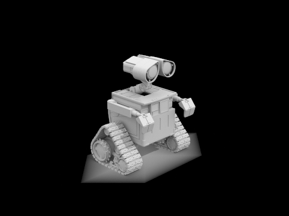
Global Illumination of Wall-e!! (this took forever to render)
|
Comparison of only direct vs only indirect illumination at 1024 samples per pixel
|
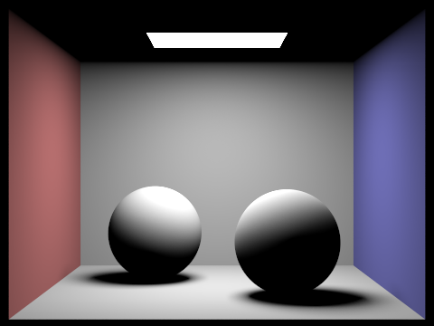
Direct Illumination
|
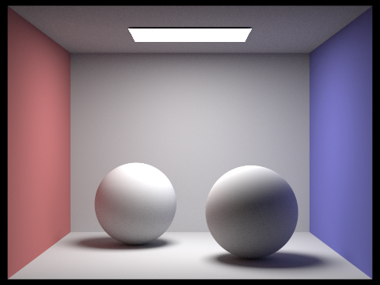
Indirect Illumination
|
Bunny with accumulated light and varying max depth
|
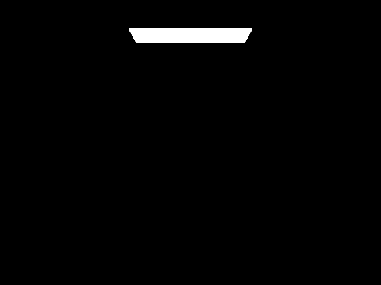
CBunny with accumulation and max depth of 0
|
CBunny with accumulation and max depth of 1
|
CBunny with accumulation and max depth of 2
|
|
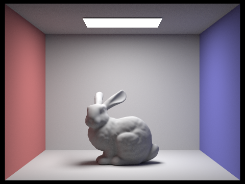
CBunny with accumulation and max depth of 3
|
CBunny with accumulation and max depth of 4
|
CBunny with accumulation and max depth of 100
|
Bunny with unaccumulated light and varying max depth at 1024 samples per pixel
|
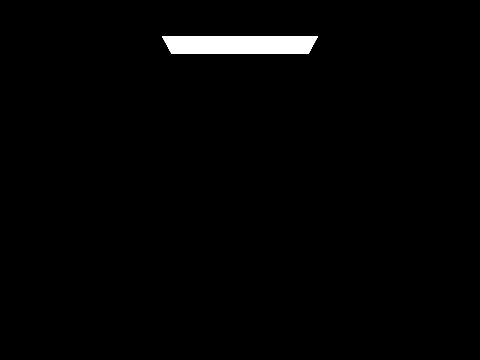
CBbunny with no accumulation and max depth of 0
|
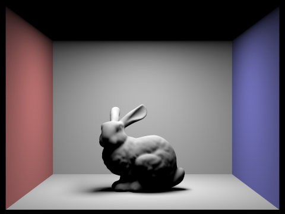
CBbunny with no accumulation and max depth of 1
|
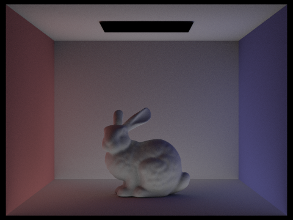
CBbunny with no accumulation and max depth of 2
|
|
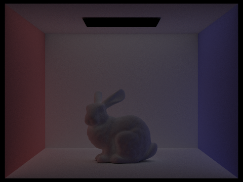
CBbunny with no accumulation and max depth of 3
|
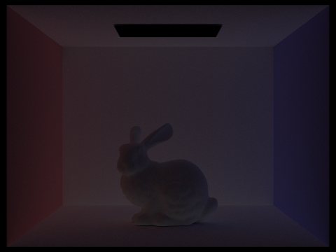
CBbunny with no accumulation and max depth of 4
|
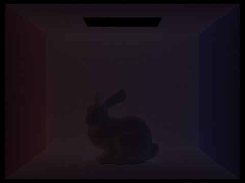
CBbunny with no accumulation and max depth of 5
|
Comparison and anaylsis of accumulated and unaccumulated bounces for CBbunny.dae
In the second bounce of light, we see light reflecting off the walls and floors to illuminate
the bottom side of the bunny that isn't directly exposed to the light. This can be seen as the
bottom half of the bunny is now much more illuminated compared to the top half since light already
reached most of the top half in the first bounce. This then brings us to the 3rd bounce which makes
shadows much more softer as we are essentially upsampling by tracing shadow rays. When you compare
reflectance lighting and global illumination to rasterization, it does a much better job at capturing
realistic lighting and shadows since rasterizing doesn't capture reflecting but only tries to calculate
it with Blinn-Phong. In addition, we can also compare the accumulated and unaccumulated images as they
are closely related. Obviously we can add up successive bounces in the unaccumulated images to get the
accumulated images but its also interesting to see the step by step lighting increase that each bounce
adds. The less bright the additive bounce is the less of a difference it makes in the accumulation image.
Bunny with Russian roulette rendering and varying max depth at 1024 samples per pixel
|
CBunny with accumulation, Russian Roulette, and max depth of 0
|
CBunny with accumulation, Russian Roulette, and max depth of 1
|
CBunny with accumulation, Russian Roulette, and max depth of 2
|
|
CBunny with accumulation, Russian Roulette, and max depth of 3
|
 CBunny with accumulation, Russian Roulette, and max depth of 4
CBunny with accumulation, Russian Roulette, and max depth of 4
|
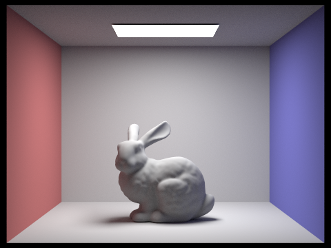
CBunny with accumulation, Russian Roulette, and max depth of 100
|
Pick one scene and compare rendered views with various sample-per-pixel rates, including at least 1, 2, 4, 8, 16, 64, and 1024. Use 4 light rays.
|
Sample-per-pixel rate is 1
|
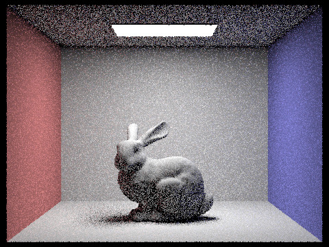
Sample-per-pixel rate is 2
|
Sample-per-pixel rate is 4
|
|
Sample-per-pixel rate is 8
|
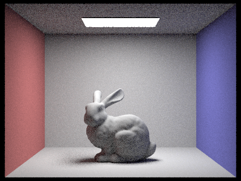
Sample-per-pixel rate is 16
|
Sample-per-pixel rate is 64
|
|
Sample-per-pixel rate is 1024
|
Part 5: Adaptive Sampling
Explain adaptive sampling. Walk through your implementation of the adaptive sampling.
Adaptive sampling is a way to speed up rendering by only using a lot of samples where they’re actually needed.
Instead of sampling every pixel the same number of times, we take a few samples at a time and check if the pixel has
already “settled” and looks good enough. We do this by calculating how much the brightness of the pixel is changing
between samples. If it’s not changing much, we stop early. If it's still noisy, we keep going. We used this in our
raytrace_pixel() function by collecting brightness values, checking the average and variation, and using a confidence
interval formula to decide when to stop. This helped our images finish faster while still looking clean. In our results,
smooth areas like backgrounds needed fewer samples (shown in blue), while complex areas like shadows or edges needed more (shown in red), which shows that adaptive sampling worked well.
Comparison of Two scenes with 2048 samples per pixel
|
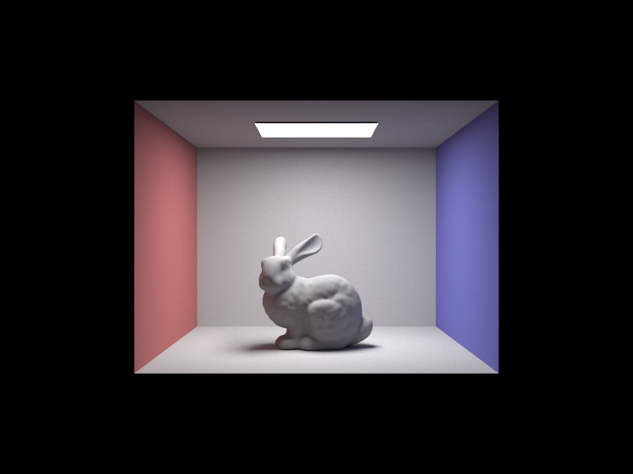
Original Image of CBbunny without sampling image rate
|
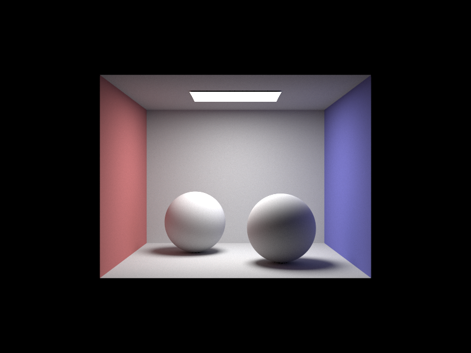
Original Image of CBspheres without sampling image rate
|
|
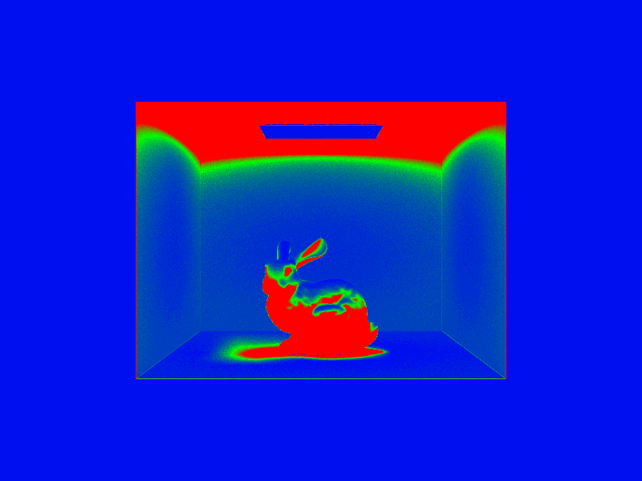
Image of CBbunny with adaptive rate sampling
|
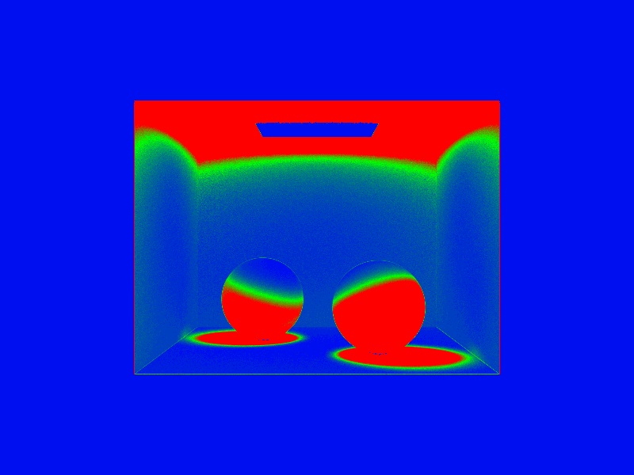
Image of CBspheres with adaptive rate sampling
|
Acknowledgements:
1. Lecture slides and Discussion from course website
2. ChatGPT, OpenAI, chat.openai.com: Helped us with understanding concepts and also paraphrasing our words for the write-up